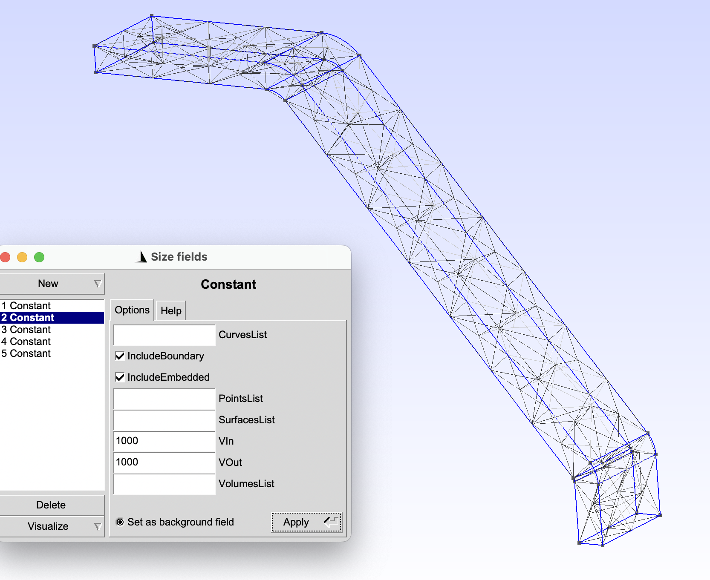
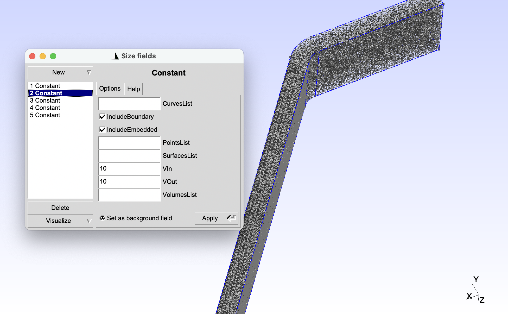
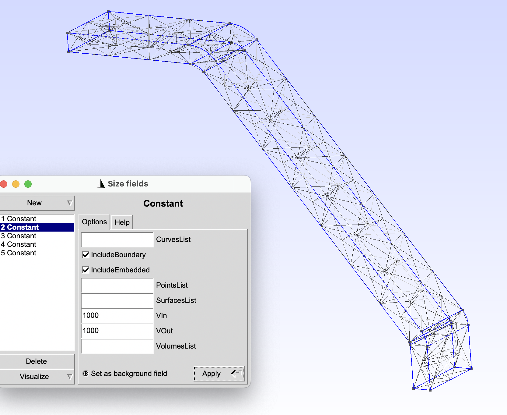
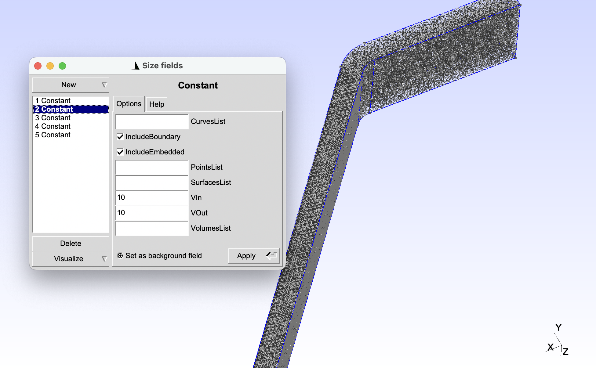
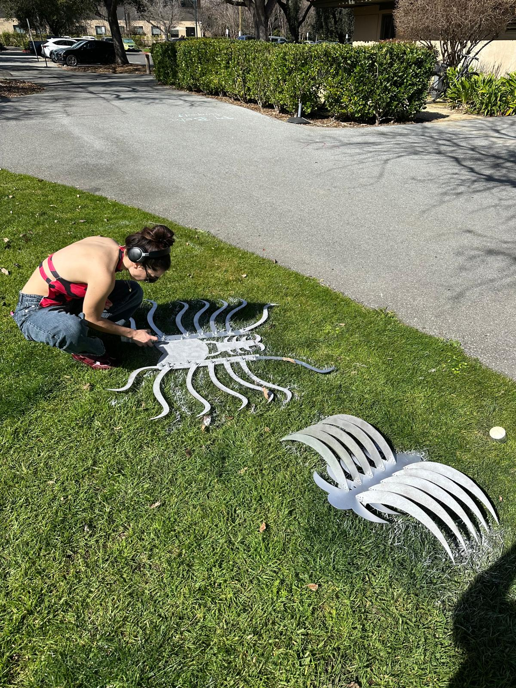
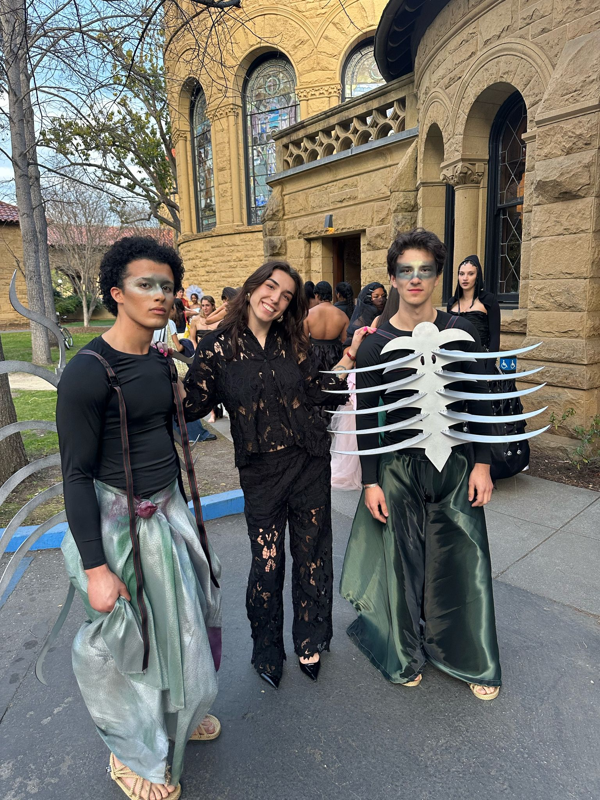
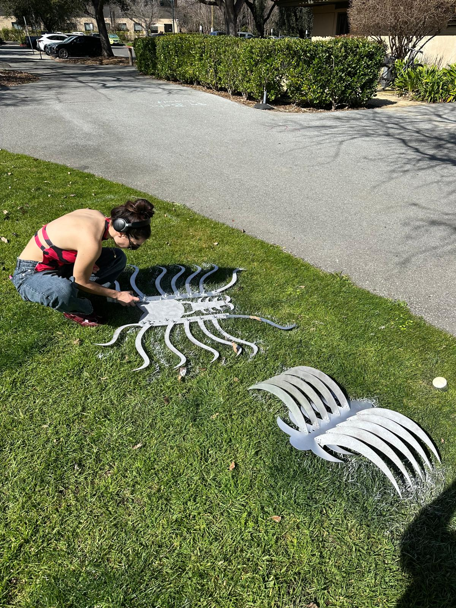
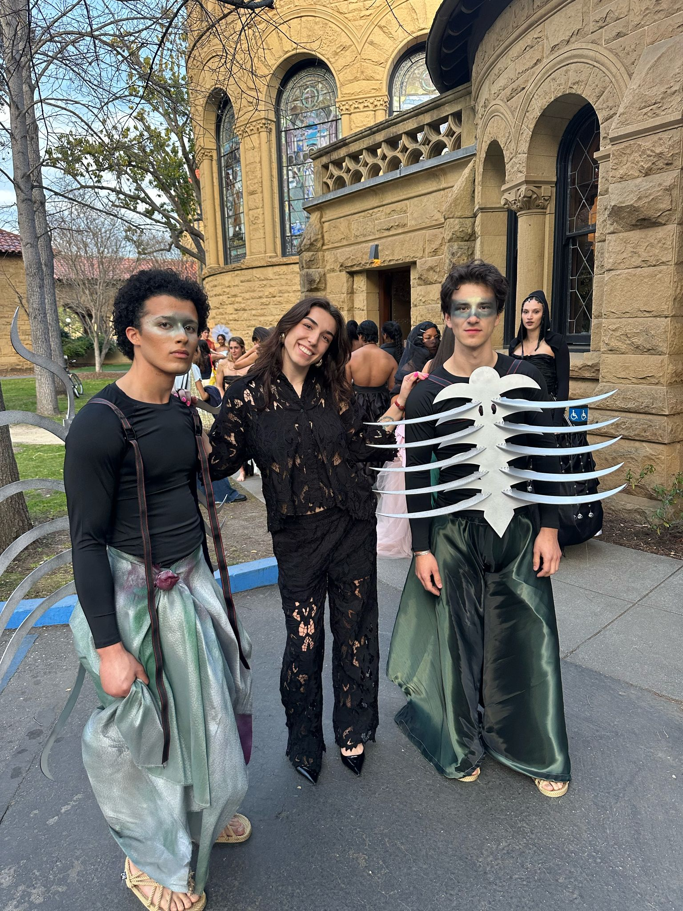

PROJECTS✧
MOTION PLATFORM MANUFACTURING
Manufacturing precision parts for lab motion platform using milling, stress testing, and 3D printing...

POMELO TEACHING ROBOT
An innovative teaching assistant robot designed to make learning computer science fundamentals fun and tangible...
FLIGHT LOG APPLICATION
A comprehensive flight tracking application for pilots to log flights, track progress, and manage aviation data...

FASHIONX SKELETON GARMENTS
Life-sized frog and stingray skeleton garments combining precision engineering, laser cutting, and fashion design...

SHOT SKI MANUFACTURING
Custom shot ski manufactured from wood using sandcasting, turning, and precision calculations with 3D design...
RESEARCH AT SISL
Stanford research project developing an LLM that interprets pilot operating handbook graphs and charts...
AIRPORT GATE ASSIGNMENT ALGORITHM
Modified Monte Carlo Tree Search algorithm for optimal airport gate assignment with research paper...

IZMO SOCIAL ROBOT
A social robot designed to provide emotional support and companionship through advanced AI and interactive features...
ACL BRACE DESIGN
Custom ACL brace designed for optimal support and comfort using advanced materials and ergonomic principles...
KINETIC SCULPTURE
An interactive kinetic sculpture exploring the intersection of art, engineering, and human interaction...
HEADPHONE ATTACHMENT DESIGN
Iterative design project creating a custom headphone attachment through rapid prototyping and user testing...

CESSNA LANDING GEAR FEA
Finite element analysis of Cessna aircraft landing gear under various loading conditions for structural optimization...
MEMORIES - LOCATION-BASED PHOTO SHARING
iOS application for location-based photo sharing through QR codes with Firebase backend and real-time features...

CS248B: CHARACTER ANIMATION PROJECTS
Three sophisticated gaming projects exploring advanced physics simulation and computer graphics...
 





 


